Perl 6 and the Real World
Physical Modelling with Perl 6
Moritz Lenz <moritz.lenz@gmail.com>
Max Planck Institute for the Science of Light
Perl 6 and the Real World - Structure
- What is a model? When is it a good model?
- A simple model
- Math: derivatives
- Free fall, spring
- Resonance
What is a Model?
- physics = striving to understand (parts of) the world
- the world is too complicated
- models are descriptions that focus on one aspect
- so Model = Simplification
Example Model
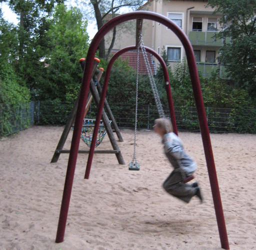
Example Model
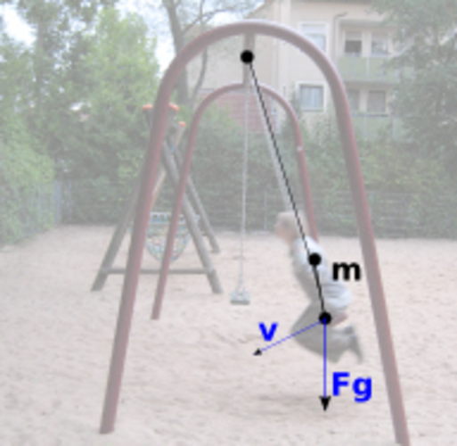
Model takes into account
- gravity
- inertia
- initial motion
- connection to anchor point
Model neglects
- colors
- exact shapes
- size of object
- friction
Is it a good model?
- it's a good model if it can answer a question for us
- examples "how fast is the object?", "What is the swinging period?",
"Does the distance to the anchor point matter?"
- accuracy of the answer important
- every model needs input data. Is that available?
- extensibilty
Another model: free falling
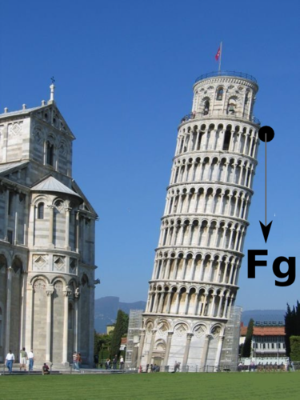
Free falling: Solved in Perl 6
use Math::Model;
my $m = Math::Model.new(
derivatives => {
velocity => 'height',
acceleration => 'velocity',
},
variables => {
acceleration => { $:gravity },
gravity => { -9.81 },
},
Free falling: Solved in Perl 6
initials => {
height => 50,
velocity => 0,
},
captures => ('height', 'velocity'),
);
$m.integrate(:from(0), :to(4.2), :min-resolution(0.2));
$m.render-svg('free-fall.svg', :title('Free falling'));
Model result
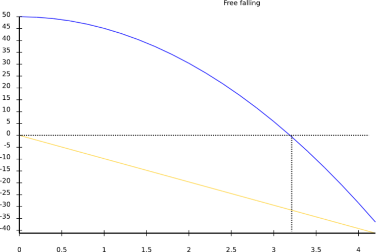
The model in detail
use Math::Model;
my $m = Math::Model.new(
derivatives => {
velocity => 'height',
acceleration => 'velocity',
},
Derivative: slope of another quantity
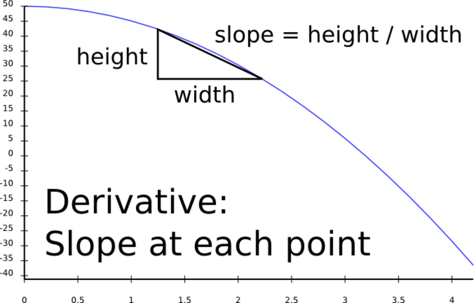
Common derivatives in Mechanics
Derivative Of
velocity position
angular velocity angle
acceleration velocity
power energy
force momentum
(= mass * velocity)
Common derivatives
current charge
birth rate population
- mortality rate
profit funds
Using derivatives
- with Math::Model, you only need to know the derivatives,
note the values derived from
- you need an initial value for the derived quantity
- (Ordinary Differential Equation, which Math::Model integrates for you)
Rest of the model
variables => {
acceleration => { $:gravity },
gravity => { -9.81 },
},
initials => {
height => 50,
velocity => 0,
},
captures => ('height', 'velocity'),
);
$m.integrate(:from(0), :to(4.2), :min-resolution(0.2));
$m.render-svg('free-fall.svg', :title('Free falling'));
Perl 6 stuff
-
$:height is a named parameter
-
Math::Model introspects code blocks for arguments
- calculates dependencies => execution order
- RungeKutta integration
Extending the model - Spring, damping
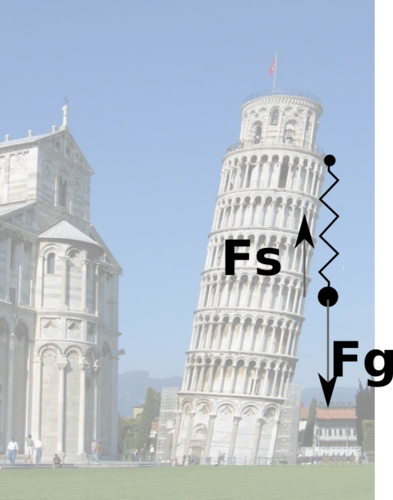
Spring, gravity, damping: source code
variables => {
acceleration => { $:gravity + $:spring + $:damping },
gravity => { -9.81 },
spring => { - 2 * $:height },
damping => { - 0.2 * $:velocity },
},
Spring, gravity, damping: results
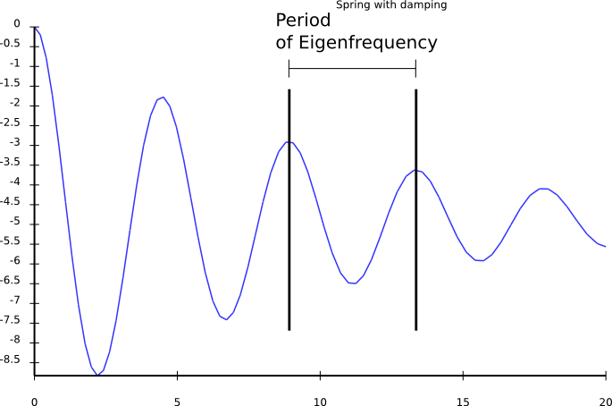
Further extensions
- Let's add an external, driving force
- Example: motor, coupled through a second spring
External driving force: Code
sub MAIN($freq) {
my $m = Math::Model.new(
variables => {
acceleration => { $:gravity + $:spring
+ $:damping + $:ext_force },
gravity => { -9.81 },
spring => { - 2 * $:height },
damping => { - 0.2 * $:velocity },
ext_force => { sin(2 * pi * $:time * $freq) },
},
);
my %h = $m.integrate(:from(0), :to(70), :min-resolution(5));
$m.render-svg("spring-freq-$freq.svg",
:title("Spring with damping, external force at $freq"));
Driving force: low frequency
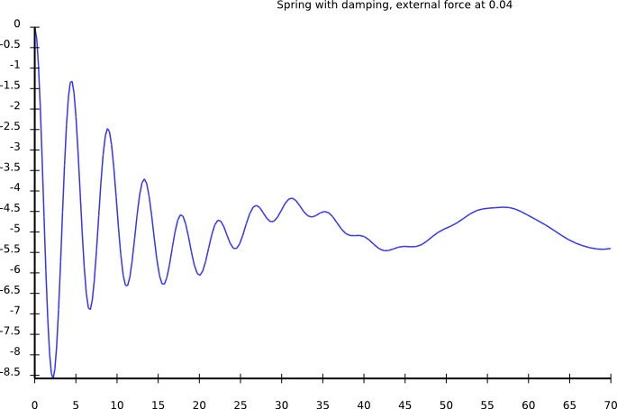
Driving force: higher frequency
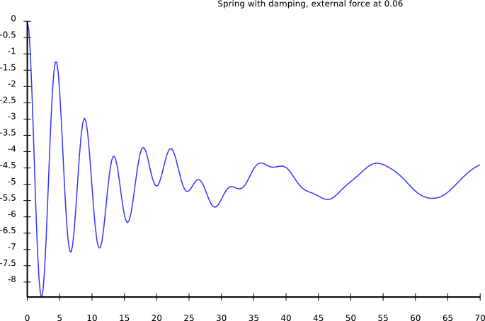
Driving force: higher frequency
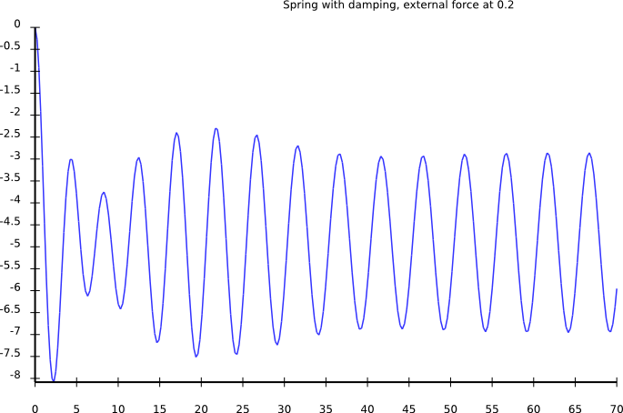
Driving force: higher frequency
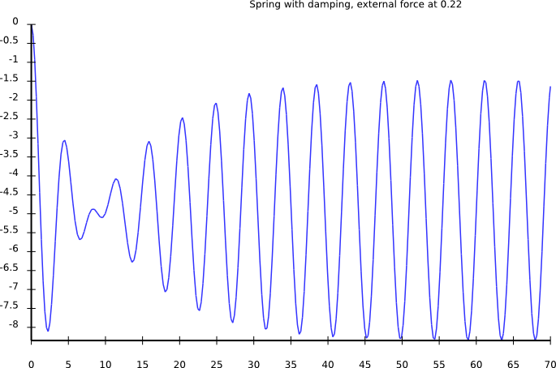
Driving force: higher frequency
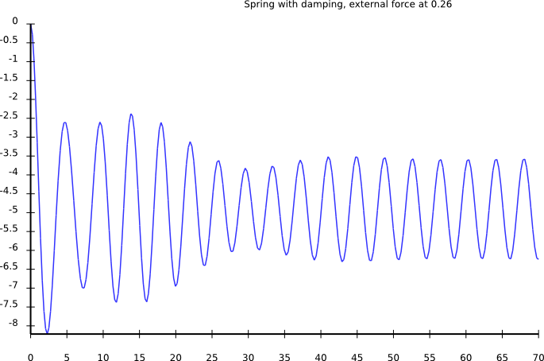
Driving force: higher frequency
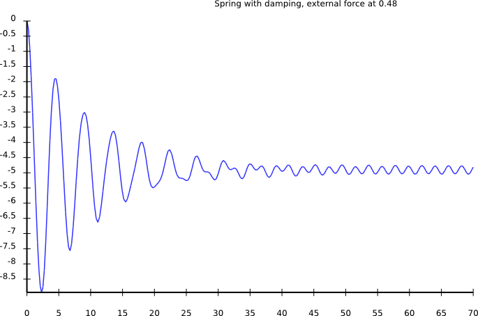
External driving force: Observations
- amplitude low for small frequencies
- amplitude high for driving freq = eigen freq
- amplitude goes to zero for very high frequencies
Amplitude vs. Frequency
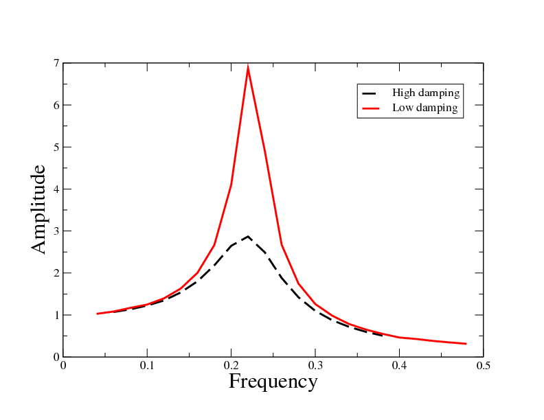
Resonance controls ...
- tune of music instruments
- light absorption, thus color of objects
- heat transport in solids (phonons are lattice resonances)
- everything else :-)
String theories
- some physicists say that particles are just resonances
- the things that move are called "strings"
- think of it what you want :-)
Limits of Math::Model
- some fields of physics require other mathematical techniques
- many need partial differential equations
- no quantum mechanics
- no fluid dynamics
Summary
- physical models: simplifcation to essentials
-
Math::Model integrates models for you
- oscillator: initial motion + force in opposite direction
- resonance if driving frequency is close to eigen frequency